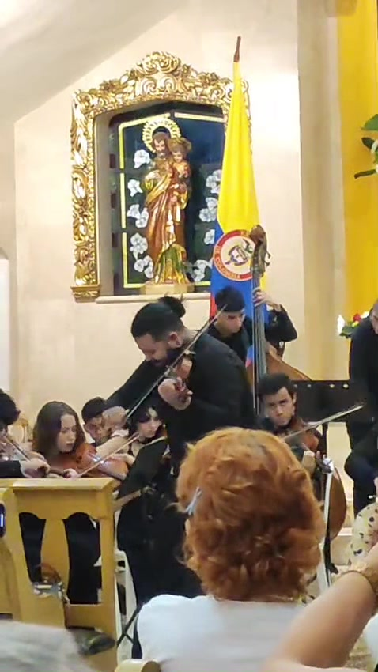
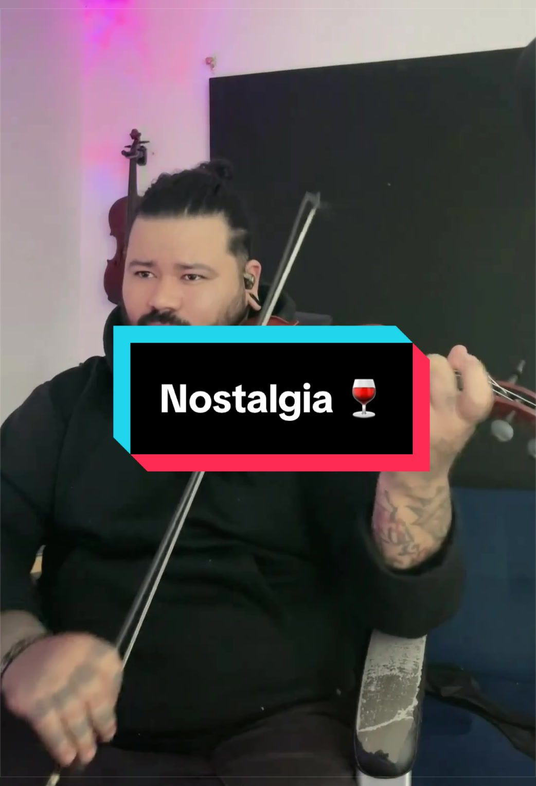

«Un talento sin fronteras que sorprende con su música.»Noticias Caracol
Violinista · Cúcuta, Colombia
Enmanuel Bastidas
Violinista formado en El Sistema de Venezuela. Artista de escena, docente virtual y creador de contenido: la música clásica también puede ser divertida.
Aparece en: La Opinión Noticias Caracol El Estímulo

15+
Años de trayectoria
70+
Videos y covers publicados
180K+
Vistas en YouTube
🎵
En vivo todos los días en TikTok
Biografía
La historia de un violín que no se calla
Enmanuel Bastidas es un violinista venezolano radicado en Cúcuta, Colombia, formado en el aclamado El Sistema de Orquestas y Coros Juveniles de Venezuela, la red que formó a músicos como Gustavo Dudamel.
Su carrera combina escena, aula y pantalla: solista y dúo en eventos y bodas, docente en Bastidas Violin Academia (su escuela virtual de violín) y creador de contenido con una comunidad que crece cada día en TikTok, Instagram y YouTube.
De las Cuatro Estaciones de Vivaldi al tango y al pop, su repertorio cruza géneros con una sola meta: que el violín llegue a quien nunca pensó que le gustaría.

Prensa
Lo que dicen de él
«El violín solista estará a cargo de Enmanuel Bastidas, joven violinista venezolano.»La Opinión · Teatro Zulima
«Cada noche deleita con los acordes de su violín.»El Estímulo
Explora
Tres maneras de vivir el violín
Eventos, academia o comunidad: tú eliges por dónde entrar.
Eventos
Violín en vivo para bodas, serenatas, fiestas y eventos corporativos en Cúcuta y la frontera.
Ir a eventosAcademia
Bastidas Violin Academia: la escuela virtual para aprender violín desde donde estés.
Ir a la academiaTikTok
Directos todos los días, covers, retos y comunidad: sígueme en @bastidasviolin.
Ver el perfil¿Hablamos de música?
Eventos, clases o colaboraciones: escríbeme y respondo personalmente.
Escríbeme por WhatsAppCúcuta y la frontera · Respondo personalmente